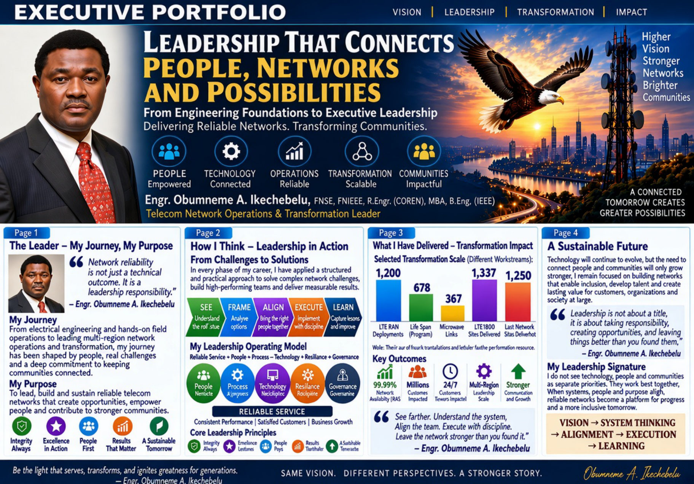
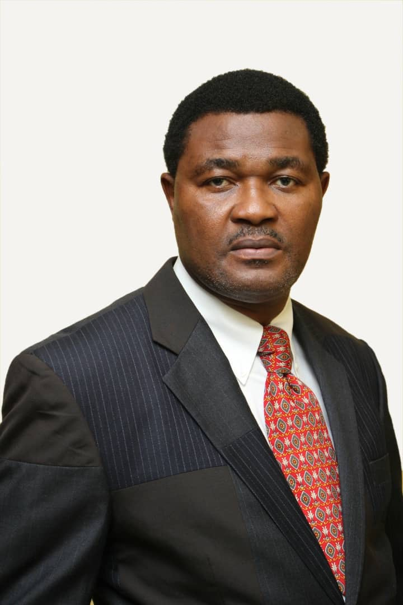
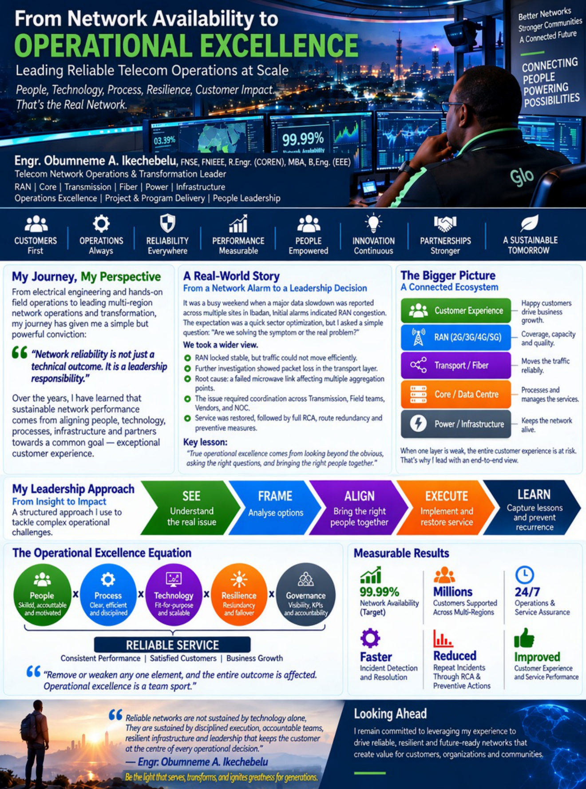
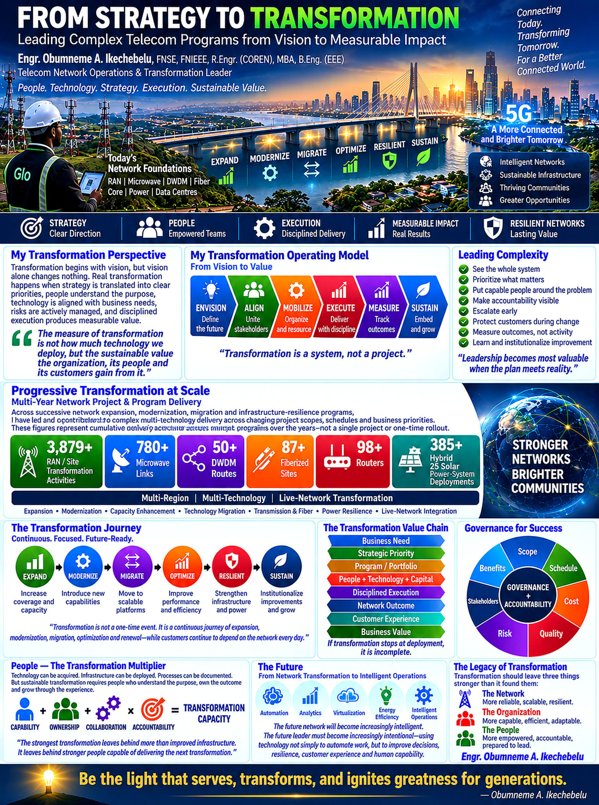
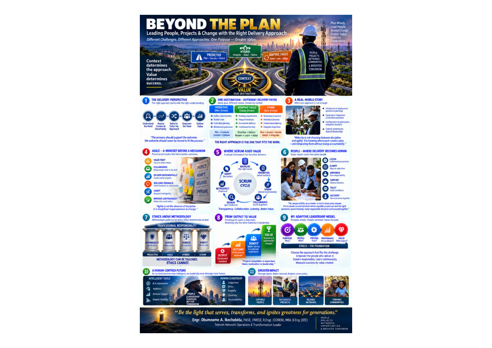
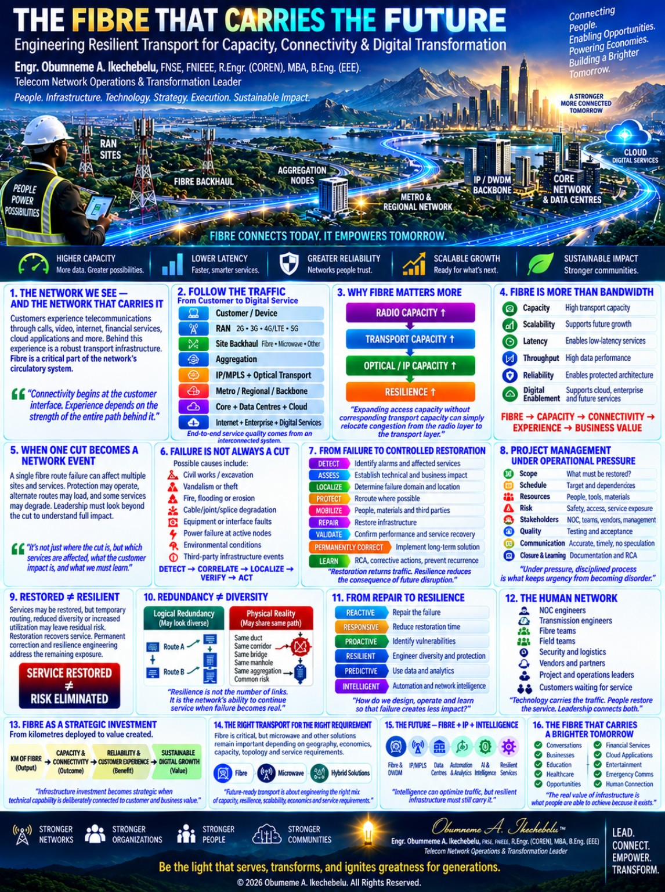
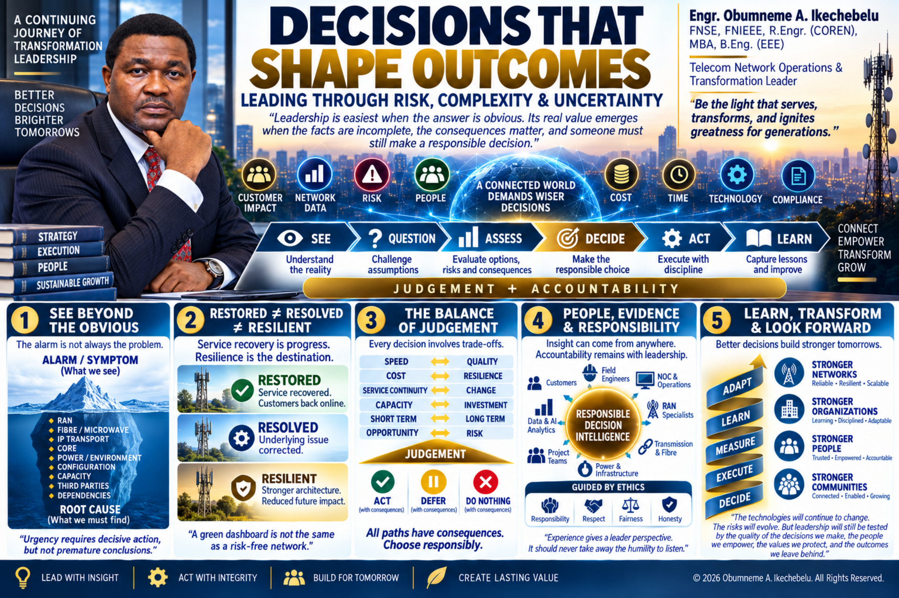
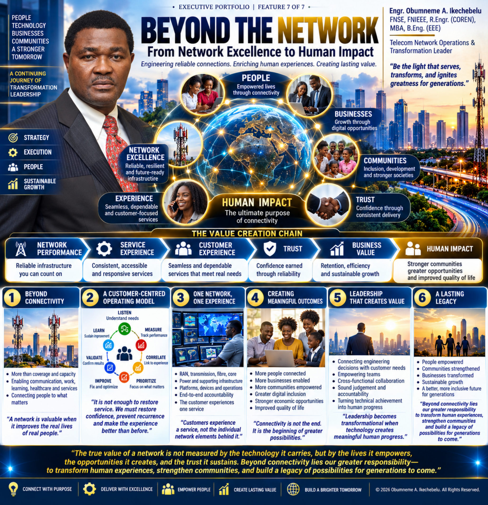

Feature 01 / 07
Leadership That Connects
People, Networks and PossibilitiesSEE → FRAME → ALIGN → EXECUTE → LEARN
View full infographicRead write-upEngr. Obumneme A. Ikechebelu, FNSE, FNIEEE, R.Engr. (COREN), MBA, B.Eng. (EEE)
Telecom Network Operations & Transformation Leader with 20+ years across RAN, Core, transmission, fibre, power resilience, network availability, vendor/SLA management and complex technical delivery.
Explore the seven featuresDownload résumé
My leadership journey spans frontline engineering through divisional technical leadership, connecting operational excellence with infrastructure resilience, disciplined delivery and human impact.
People → Operational Excellence → Transformation → Delivery → Infrastructure Resilience → Decision-Making → Human Impact

SEE → FRAME → ALIGN → EXECUTE → LEARN
View full infographicRead write-up
Detect → Assess → Prioritize → Restore → Validate → Analyze → Prevent → Improve
View full infographicRead write-up
Vision → Strategy → Prioritize → Mobilize → Execute → Measure → Optimize → Sustain
View full infographicRead write-up
Context determines the approach. Value determines success.
View full infographicRead write-up
Fibre connects today. It empowers tomorrow.
View full infographicRead write-up
SEE → QUESTION → ASSESS → DECIDE → ACT → LEARN — anchored by JUDGEMENT + ACCOUNTABILITY
View full infographicRead write-up
NETWORK PERFORMANCE → SERVICE EXPERIENCE → CUSTOMER EXPERIENCE → TRUST → BUSINESS VALUE → HUMAN IMPACT
View full infographicRead write-upSadique Kwajaffa
11 August 2015 · Client
Gloria Umeadi CEng MIET, COREN
21 December 2012
Franklin Nkwoji
24 September 2012
Dr. Abdlrazaq Ayodeji Adeyi Shittu
24 December 2011 · Client
Dr. Abdlrazaq Ayodeji Adeyi Shittu
21 December 2011 · Client
LIGHT • INTEGRITY • EXCELLENCE • EMPOWERMENT • LEGACY
The Eagle sees the destination; the Bull endures the journey.